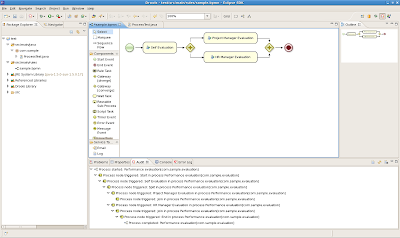

Drools Flow and BPMN2
The Drools team has a commitment to standards. Our task implementation is based on WS-HumanTask, we are working on providing a WS-BPEL execution engine streamlined into the Drools Flow framework, etc. And now with the Business Process Model and Notation (BPMN) 2.0 specification steadily moving forward on its way to become a great standard, we are adopting it for our process modeling in Drools Flow.
“Drools Flow as a growing
subset of BPMN 2.0″
BPMN 2.0 not only defines a standard on how to graphically represent a business process (like BPMN 1.1), but now also includes execution semantics for the elements defined, and an XML format on how to store (and share) process definitions. Needless to say that this is an important specification in the BPM area.
As Bruce Silver explained is his recent blog:
Our BPMN 2.0 submission passed four key votes and is on track to be an OMG “alpha” specification by the fall. […] So what’s next? The general membership vote will take 6-8 weeks […]. We expect this to happen by September. We expect the Finalization Task Force to take up to a year to complete. […] So what does this mean in plain English? In the FTF phase, implementers (tool vendors) will point out technical problems, but for the most part, what you see now is what you are going to get.
So, now that the BPMN 2.0 spec is starting to stabilize, the time has come to show how we are going to support BPMN 2.0 in Drools Flow.
First of all, we have improved our BPMN skin to conform to the BPMN 2.0 specification. For those who might not know, a skin in Drools Flow defines how to visualize a process (like color, icon, name, etc.). Drools Flow supports pluggable skins, so that users themselves can define the look of a process. The new BPMN2 skin, as shown below, will be used as the default skin from now on. It uses the BPMN2 terminonolgy, icons, etc.
Secondly, we also are looking at using the BPMN 2.0 XML format for storing processes. The BPMN format already closely resembles our Drools Flow language. Most of the Drools Flow constructs also have a one-to-one mapping to a corresponding BPMN construct. BPMN also provides numerous extension points in its model to define additional attributes, node types, etc. whenever necessary.
Therefore, we have defined a new XML mapping to our existing model that allows you read in (and write out) your processes using the new BPMN2 XML format. As a result, you will be able to execute your (executable) BPMN2 processes on the Drools Flow engine. Note that this is not simply a prototype where you can define BPMN2 by hand and execute it standalone, it is integrated in our entire tool chain, so you can use all other Drools Flow features as well of course: persistence and transactions, debugging, Guvnor as the process repository, the web console for process management, audit logging, reporting, etc.
For example, the process shown above can be defined in BPMN2 as follows (note that we added a process variable and a few parameters to make it executable):
<?xml version="1.0" encoding="UTF-8"?>
<definitions id="Definition"
targetNamespace="http://www.jboss.org/drools"
typeLanguage="http://www.java.com/javaTypes"
expressionLanguage="http://www.mvel.org/2.0"
xmlns="http://schema.omg.org/spec/BPMN/2.0"
xmlns:xs="http://www.w3.org/2001/XMLSchema-instance"
xs:schemaLocation="http://schema.omg.org/spec/BPMN/2.0 BPMN20.xsd"
xmlns:tns="http://www.jboss.org/drools">
<itemdefinition id="employeeId" structureref="java.lang.String">
<resource id="Employee" name="Employee Resource">
<process id="Evaluation" name="Evaluation Process">
<!-- process variables -->
<property id="employee" itemsubjectref="tns:employeeId">
<!-- nodes -->
<startevent id="StartProcess">
<usertask id="Self_Evaluation">
<potentialowner resourceref="tns:Employee">
<resourceassignmentexpression>
<formalexpression>#{employee}</formalexpression>
</resourceassignmentexpression>
</potentialowner>
</usertask>
<parallelgateway id="Diverge" gatewaydirection="diverging">
<usertask id="Project_Manager_Evaluation">
<potentialowner resourceref="tns:Employee">
<resourceassignmentexpression>
<formalexpression>john</formalexpression>
</resourceassignmentexpression>
</potentialowner>
</usertask>
<usertask id="HR_Manager_Evaluation">
<potentialowner resourceref="tns:Employee">
<resourceassignmentexpression>
<formalexpression>mary</formalexpression>
</resourceassignmentexpression>
</potentialowner>
</usertask>
<parallelgateway id="Converge" gatewaydirection="converging">
<endevent id="EndProcess">
<!-- connections -->
<sequenceflow sourceref="StartProcess" targetref="Self_Evaluation">
<sequenceflow sourceref="Self_Evaluation" targetref="Diverge">
<sequenceflow sourceref="Diverge" targetref="Project_Manager_Evaluation">
<sequenceflow sourceref="Diverge" targetref="HR_Manager_Evaluation">
<sequenceflow sourceref="Project_Manager_Evaluation" targetref="Converge">
<sequenceflow sourceref="HR_Manager_Evaluation" targetref="Converge">
<sequenceflow sourceref="Converge" targetref="EndProcess">
</process>
</definitions>
Using the existing Drools API and tools, you can then simply define, deploy, execute and manage this process, just like you’re used to when running your favorite Drools Flow processes. Here’s a screenshot of the Drools Eclipse plugin, while defining and testing this simple process (click on it for a larger view).

We will first need to complete our mapping for a few of the remaining Drools Flow concepts (to their corresponding BPMN2 XML representation), so you expect all this somewhere in the course of August.

{kind=link}
{kind=link}